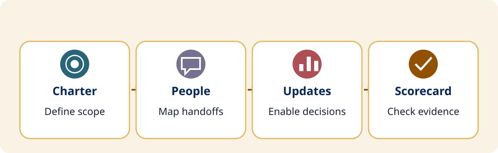
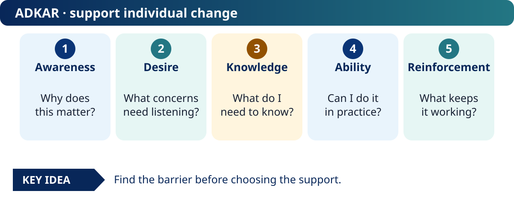
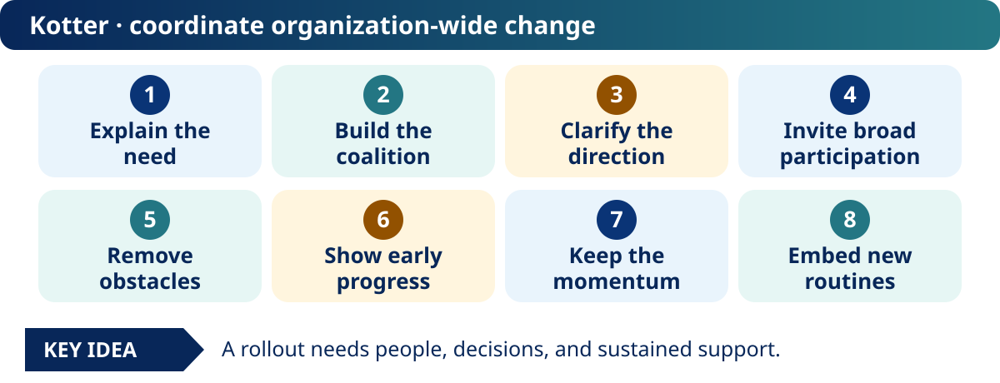

Project session quick reference
Reusable conference planning resource.
Project toolkit
We’ll work through the case together; take these templates back to support device refreshes, cybersecurity rollouts, infrastructure upgrades, and AI implementation.

Reusable conference planning resource.
Reusable conference planning resource.
Reusable conference planning resource.
Reusable conference planning resource.


The core planning ideas are adapted from the supplied TCEA Module 8 project-management package. Its archived slides and proposed video filenames are source material, not published videos for this session.
Prosci ADKAR primary reference ↗ · Kotter further reading ↗
External references checked October 27, 2026. No numerical effectiveness claims or project-certification credit are assigned by this conference activity.